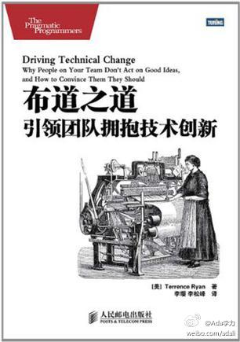

读过《布道之道》 ★★★★ “副标题可以是：如果说服团队其它人采用新技术新方案。作者的很多案例让我联想到之前所呆过的软件企业，那种分权制的，业务导向的姣大软件公司的技术经理，可能更适合读这本..” 网页链接 
经常有人说，外行可以领导内行。体育界就有这么一个传闻，游泳奥运冠军的教练不会游泳。这种例子并不多见，不能当作普遍规律来用。有行内的经历去做领导内行的事情，会许多便利，不过有时候需要克制的是，别把精力花在和内行比试专业上，重要的是怎么把事情做好，不管是你做，还是鼓动指导别人做。
《技术布道》里说得很直白的一句话是：“技术是工具，不能解决实际问题的技术，不论是否多么先进或者多么优美，势必会被人忽视和抛弃。”老实说，让技术至上的程序员们接受这个观点，还是挺难受的。想想当年，有多少人抱着技术改变世界的想法。
回复@黄勇刚:鉴定的经验和标准从哪里来？怎么保证标准的合理性？尤其是新领域，外行行吗？ //@黄勇刚:领导的任务是组织协作、鉴定贡献@Ada李力:经常有人说，外行可以领导内行。体育界就有这么一个传闻，游泳奥运冠军的教练不会游泳。这种例子并不多见，不能当作普遍规律来用。有行内的经历去做领导内行的事情，会许多便利，不过有时候需要克制的是，别把精力花在和内行比试专业上，重要的是怎么把事情做好，不管是你做，还是鼓动指导别人做。
回复@flyisland:这种想法往往会转变成“技术至上”的思维方式。 //@flyisland:如果抱着“技术改变世界”的想法，应该更加认同这句话才对啊？@Ada李力:《技术布道》里说得很直白的一句话是：“技术是工具，不能解决实际问题的技术，不论是否多么先进或者多么优美，势必会被人忽视和抛弃。”老实说，让技术至上的程序员们接受这个观点，还是挺难受的。想想当年，有多少人抱着技术改变世界的想法。
//@胡德民PeterHu: 我会这样说：不能转换成实际效益的技术，不是有一天变成别人拥有的技术，就是成为历史。如何转换成实际效益？无非“解决问题、创造价值”八字而已。这是我在大学时代的信念，十几年来，直到今日我还是这么看待技术。@Ada李力:《技术布道》里说得很直白的一句话是：“技术是工具，不能解决实际问题的技术，不论是否多么先进或者多么优美，势必会被人忽视和抛弃。”老实说，让技术至上的程序员们接受这个观点，还是挺难受的。想想当年，有多少人抱着技术改变世界的想法。
 网页链接
网页链接